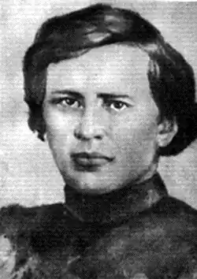

У вирі українського літературного життя кінця 50-60 років XIX століття яскраво виділяється творча індивідуальність Анатолія Свидницького. Йому належить пальма першості в створенні українського реалістичного роману з виразним соціальним спрямуванням. Він намагався порушувати злободенні соціальні питання в творах різних жанрів — піснях, фольклорно-етнографічних нарисах, оповіданнях.
Народився А. П. Свидницький 13 вересня 1834 року в с. Маньківці Гайсинського повіту на Поділлі в родині священика. У дев’ятирічному віці Анатолія віддали до Крутянської духовної школи в сусідньому Балтинському повіті. Виховання різкою, атмосфера байдужості і лицемірства, що там панувала, прекрасно передана письменником у романі "Люборацькі".
Сімнадцятирічним юнаком Свидницький приїздить у Кам’янець-Подільський продовжувати навчання у Подільській духовній семінарії. Жвавого, допитливого юнака не задовольняла семінарська освіта, в якій головна увага приділялася богословським предметам. Формування світогляду Свидницького, який за спогадами сучасників відзначався життєрадісністю, іронічним ставленням до життя, потягом до всього нового значною мірою відбувалося всупереч теологічному спрямуванню семінарської освіти. Ще з села юнак виніс любов до пісні і музики, записував народні пісні, легенди, приглядався до селянських обрядів, виявляв інтерес до природничої науки. Так у семінариста визрів намір остаточно порвати з духовною кар’єрою. За рік до завершення навчання Свидницький вступає спочатку на медичний, а потім переводиться на історико-філологічний факультет Київського університету. З перших днів перебування в Києві Анатолій зіткнувся з складними матеріально-побутовими труднощами, адже батько позбавив його будь-якої підтримки. Навчаючись в університеті, він активно включився в студентське громадське життя, виявляв зацікавленість суспільно-політичними питаннями того часу, контактував з членами студентського політичного товариства, був серед тих, хто організував у Києві дві недільні школи. Через матеріальні нестатки Анатолій не зміг завершити свою освіту Восени 1860 року Свидницький складає при університету іспит на звання учителя російської словесності, показавши при цьому відмінні знання з мови та методики її викладання і отримує призначення до Миргородського повітового училища. Крім занять в училищі він працює у відкритій з його ініціативи недільній школі, пропагуючи прогресивний звуковий метод навчання грамоти, використовуючи у викладанні українську мову, знайомлячи своїх слухачів з українською літературою, поезією Т. Шевченка. Тут же розпочав свою літературну діяльність. Працює над романом "Люборацькі", написав фольклорно-етнографічні нариси "Злий дух", "Великдень у подолян", "Відьми, чарівниці й упирі, чи то ж примхи і примхливі оповідання люду українського", а також декілька оповідань. Запідозрений у неблагодійності в роки посилення реакції, Свидницький змушений залишити Миргород. Знайомі допомогли йому влаштуватися в акцизному відомстві у містечку Козельці на Чернігівщині. Робота не давала задоволення, життя у глухому закутку пригнічувало Свидницького. Не склалося і особисте життя. Розчарований і зневірений він все частіше шукає розради у чарці, що і стало причиною його звільнення з посади у 1868 році. Треба було якось утримувати родину, в якій було троє маленьких дітей і Свидницькому вдається влаштуватися на посаду помічника завідуючого Київським центральним архівом. Тут відновлює давні зв’язки, передає свої фольклорні записи П. Чубинському та І. Рудченку, друкує в газеті "Киевлянин" ряд оповідань і нарисів російською мовою. У вересні 1870 року А. Свидницький прибув до Кам’янця-Подільського з надією посісти місце священика, однак йому відмовили. Про цю подорож він розповідає у дорожньому нарисі "Туда и обратно". Безробіття, тяжкий моральний стан підірвав і без того хворого Свидницького.30 липня 1871 року Анатолій Патрикійович у 37-річному віці помер у Києві від хронічної хвороби печінки. Основний твір А. Свидницького — роман "Люборацькі". Лише через чверть століття рукопис твору потрапив до І. Франка і був опублікований у журналі "Зоря". Письменник визначав "Люборацькі" як "роман життя правобіцького духовенства". Тут на широкому суспільному фоні життя Поділля 40-50-х років XIX століття розгортається трагічна історія сім’ї сільського священика Гервасія Люборацького, докладно з’ясовуються соціальні і психологічні причини її розкладу і загибелі, порушуються злободенні соціальні проблеми, пов’язані з вихованням молодого покоління. Кам’янчани увіковічнили пам'ять про Анатолія Свидницького у назві однієї з вулиць на Підзамчі. Твори А. П. Свидницького Про А. П. Свидницького